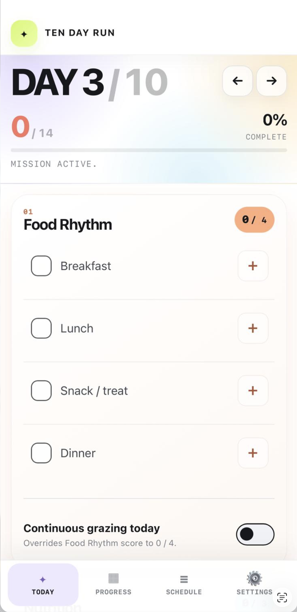
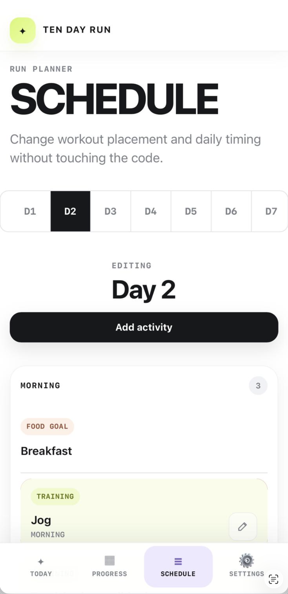
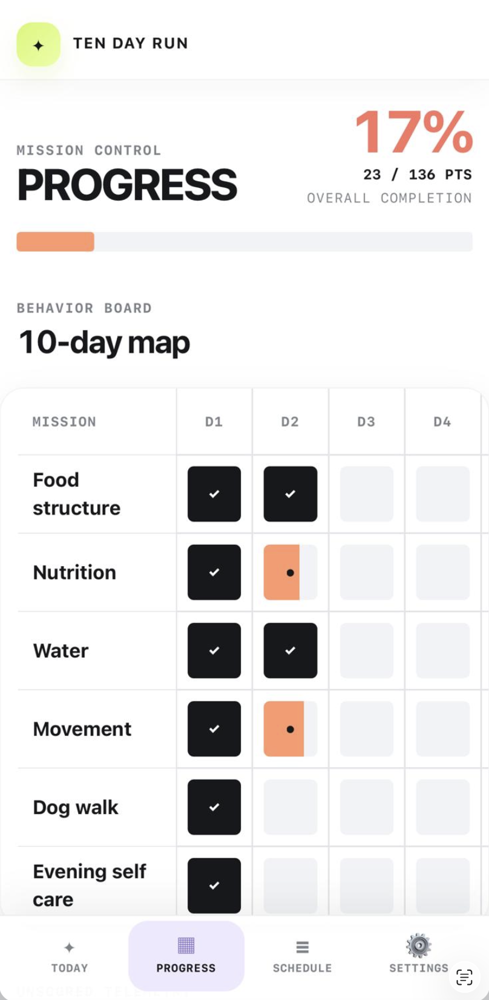

LAB — AI-ASSISTED BUILD · PWA · PRODUCT PROTOTYPING
Building a personal app far enough for the failures to become useful.
I wanted a lightweight mobile tool I would genuinely use for a ten-day consistency run. Instead of stopping at a prototype, I built the working web app, installed it on my phone and let real usage expose everything the happy path had missed.
Open the working app ↗
Want it on your phone?
iPhone Safari → Share → Add to Home Screen
Android Chrome → menu → Add to Home screen / Install app
DAY 04 / 1078%
FOOD RHYTHM3 / 4 moments
PROTEIN92 g
WaterMovementRecovery
01 — Problem
A personal tool only works if logging is easier than abandoning it.
The product needed to support a short behavioural-consistency run without turning into another dashboard I would ignore: fast daily scoring, meal-level food logging, useful nutrition totals, recovery tracking and an interface that felt good on a phone.
02 — What I built
Enough product to make the edge cases real.
03 — What broke
The useful part started after it “worked”.
The camera-based scanner failed on the real device even though manual food entry worked.
The first search implementation returned inconsistent results and was not reliable enough to feel like a real product feature.
Recent-food memory and persistence did not behave consistently at first, breaking the speed advantage the feature was meant to create.
Installing the site to the iPhone Home Screen exposed a persistence problem and wiped the first run's data — a much more useful lesson than a clean prototype demo.
04 — What I learned
AI-assisted development made building faster. It did not remove product or systems judgement.
The project pushed me across design, product and implementation boundaries. Browser APIs behaved differently on-device, local-first state needed explicit recovery and backup thinking, and every “smart” feature still needed a graceful fallback. The most valuable loop became: build → use → break → understand → simplify.
The point
I did not build this to prove I am a software engineer. I built it to get closer to the real constraints that appear after design leaves the canvas.
Real device evidence
The app had to survive outside the browser preview.


